Passo a passo para fazer o primeiro acesso, definir sua senha e reservar seu horário na cadeira de massagem da empresa.
Do identificador da empresa, informado pelo RH
Do seu CPF
Da senha temporária entregue pelo RH
Leia o QR code da capa ou digite www.fastrelax.com.br no navegador. Na tela de boas-vindas, toque em Área do colaborador.
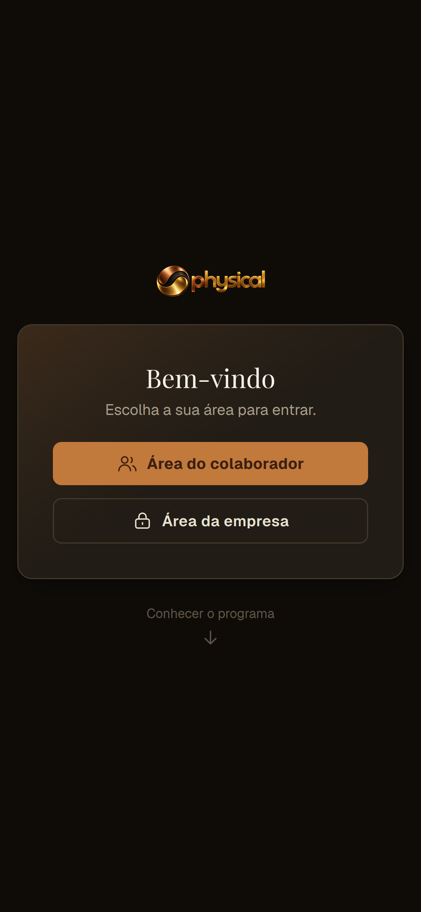
Você verá três campos: Identificador da empresa, Seu CPF e Senha. Se esqueceu a senha depois de cadastrada, use o link Esqueci minha senha.
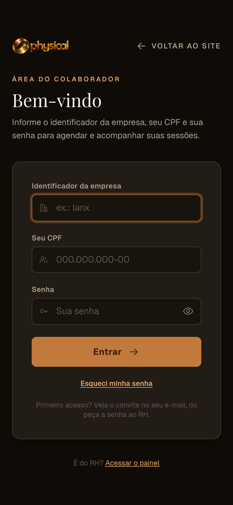
Preencha o identificador da empresa (ex.: lanx), seu CPF (só números, a máscara é automática) e a senha temporária que o RH entregou. Toque em Entrar.
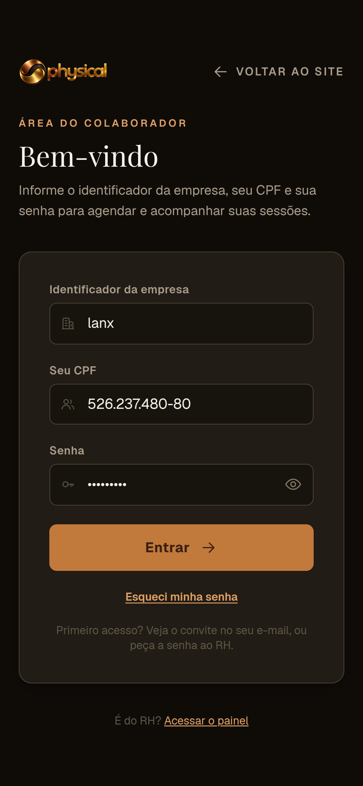
No primeiro acesso o app pede uma senha nova, com 8 a 100 caracteres. Digite-a duas vezes e toque em Definir senha. Daqui em diante, use sempre essa senha.
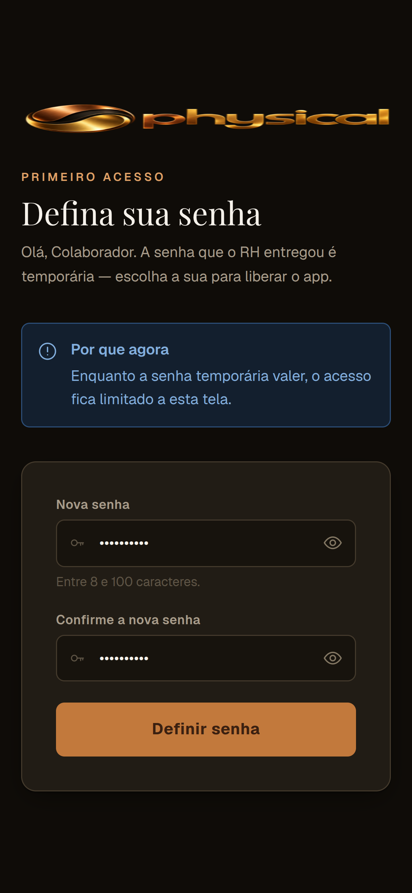
Pronto, você entrou. Para reservar a cadeira, toque em Agendar massagem ou no ícone Agendar na barra inferior.
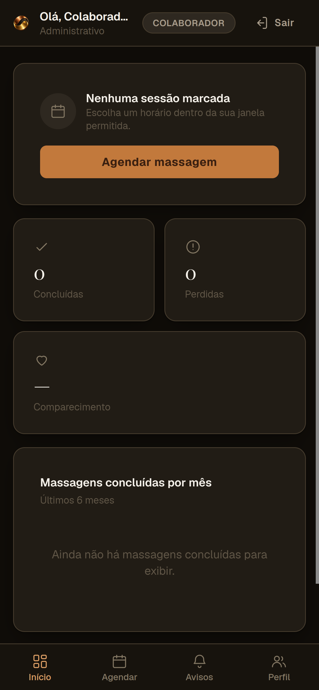
Deslize a faixa de datas para o lado e toque no dia desejado. Cada dia mostra quantos horários livres ainda existem.
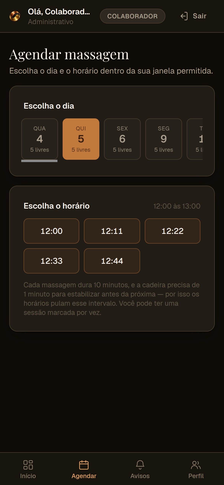
Toque em um horário dentro da sua janela permitida. Na janela que abrir, selecione a cadeira (ex.: Recepção) e toque em Confirmar. Cada sessão dura 10 minutos.
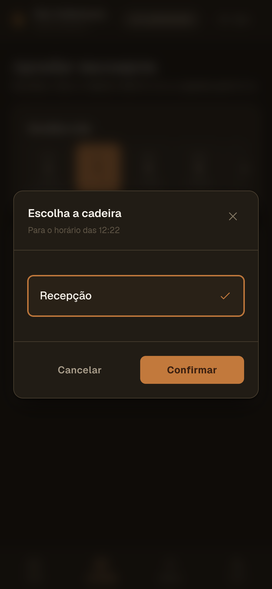
Aparece a mensagem Sessão agendada com sucesso e o horário reservado fica riscado na lista. Você pode ter uma sessão marcada por vez.
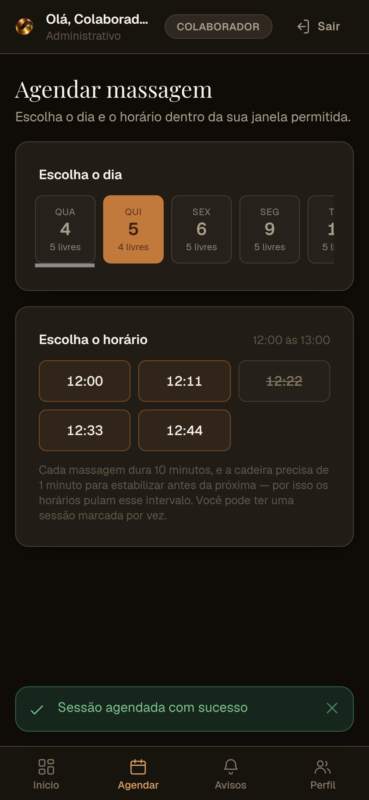
Na tela Início aparece Sua próxima massagem, com data, horário e cadeira. No horário marcado, sente-se na cadeira e toque em Iniciar agora. Não vai poder ir? Toque em Cancelar para liberar o horário.
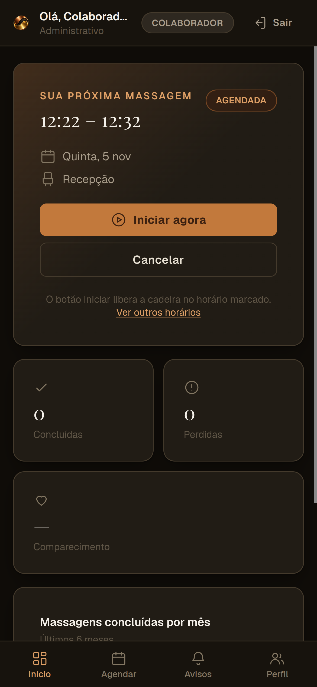
Em Avisos ficam as confirmações e os lembretes das suas massagens, mesmo os que não chegaram como notificação no aparelho.
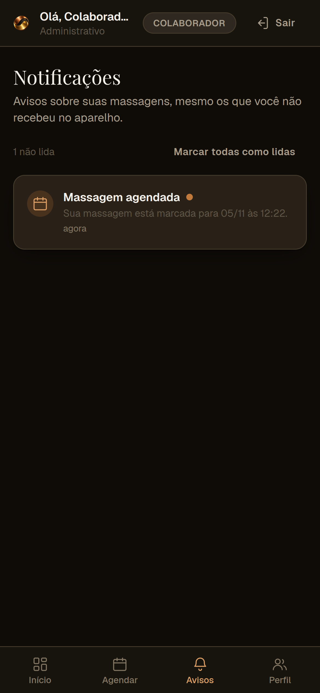
Veja seus dados, ative as notificações no navegador, troque a senha e confira seus horários permitidos.
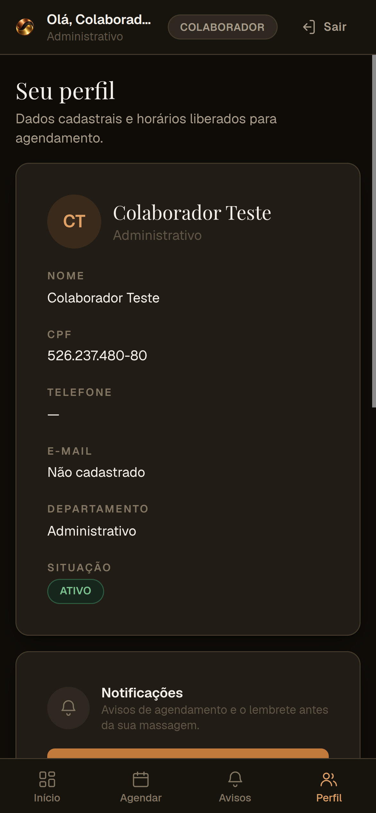
Em Perfil → Notificações, toque em Ativar neste navegador para receber o lembrete antes da massagem.
Só aparecem horários dentro da faixa definida pelo RH para você (ex.: 12:00 às 13:00, de segunda a sexta).
A massagem dura 10 minutos e a cadeira precisa de 1 minuto para estabilizar, por isso os horários pulam de 11 em 11 minutos.
Na tela de login, toque em Esqueci minha senha. Se não tiver e-mail cadastrado, peça uma nova senha temporária ao RH.
No navegador do celular, use Adicionar à tela de início para abrir o app com um toque.
Aponte a câmera para o QR code ou acesse www.fastrelax.com.br